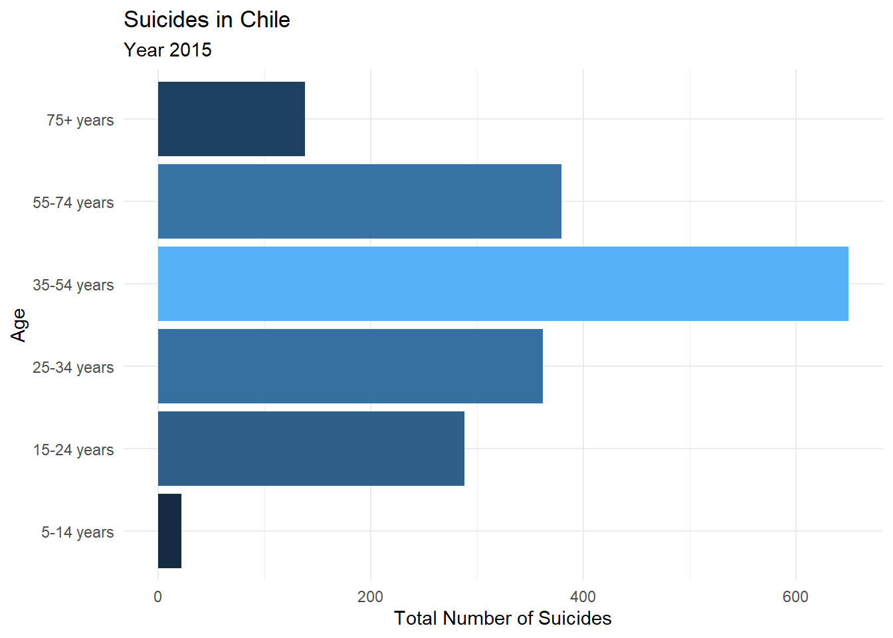
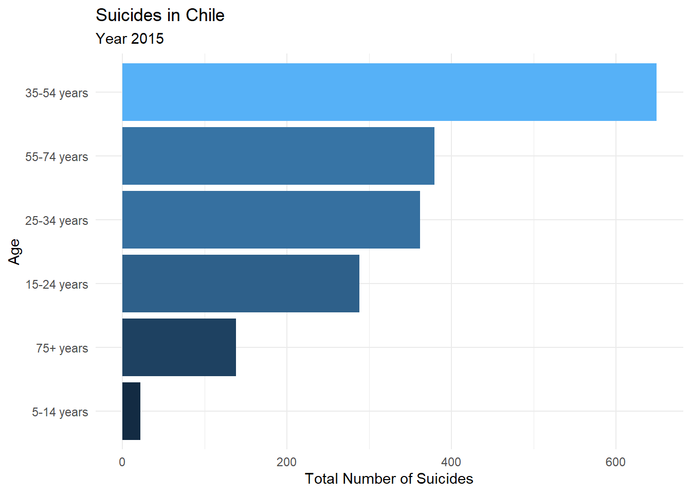
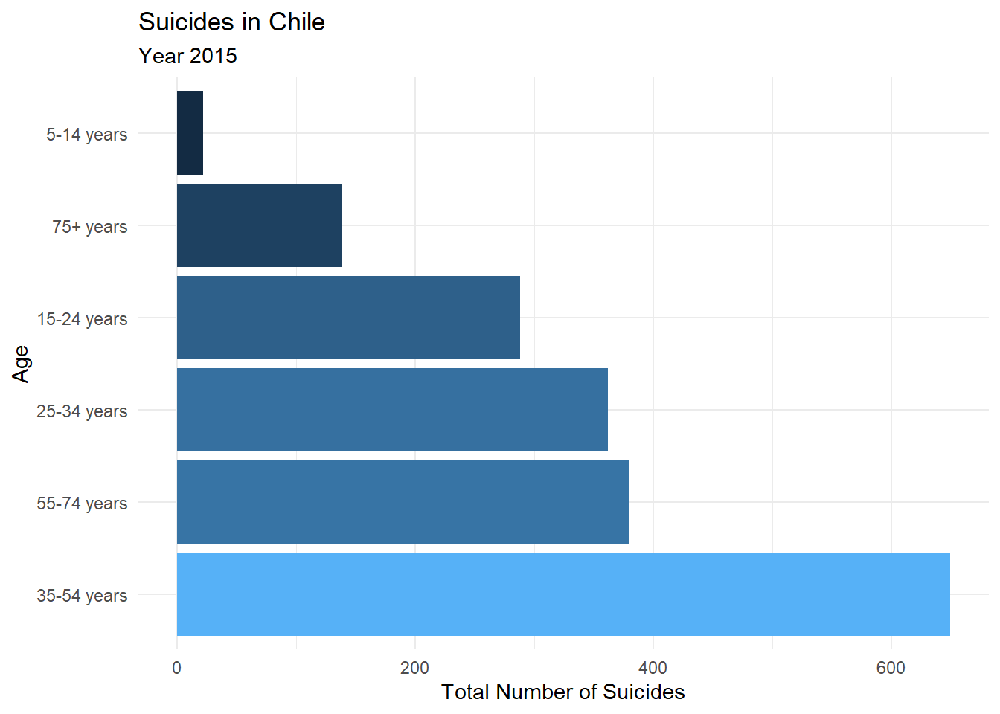
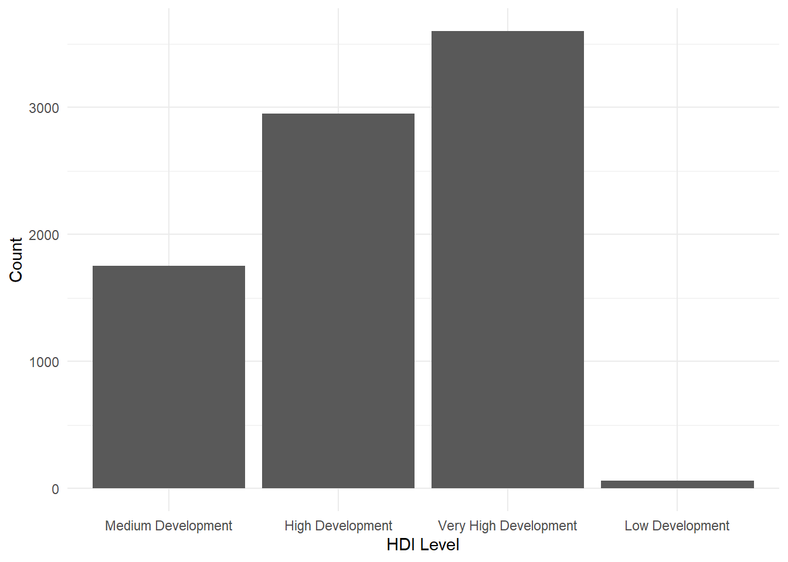
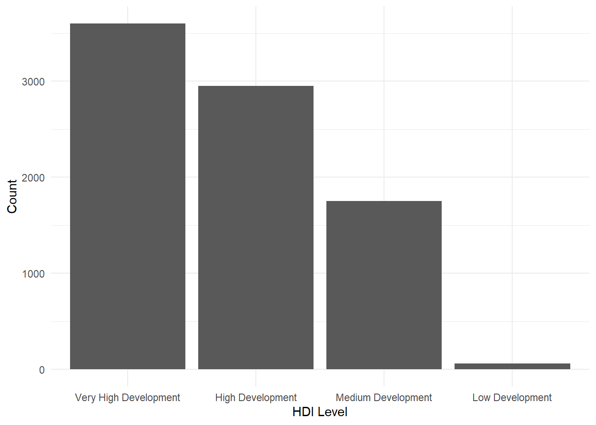
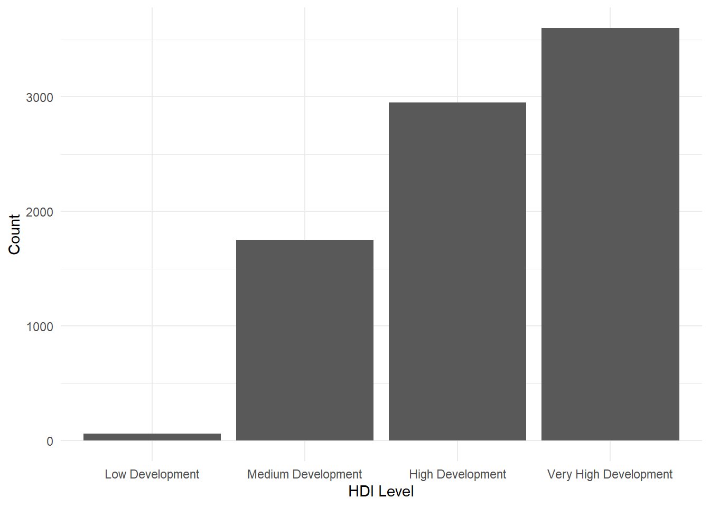
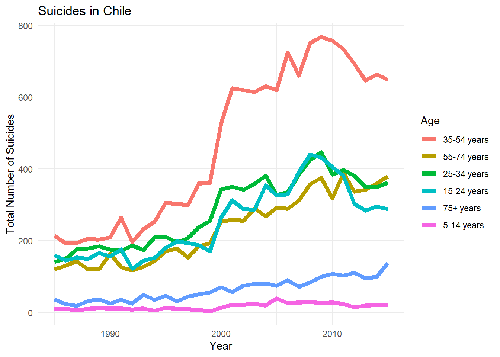
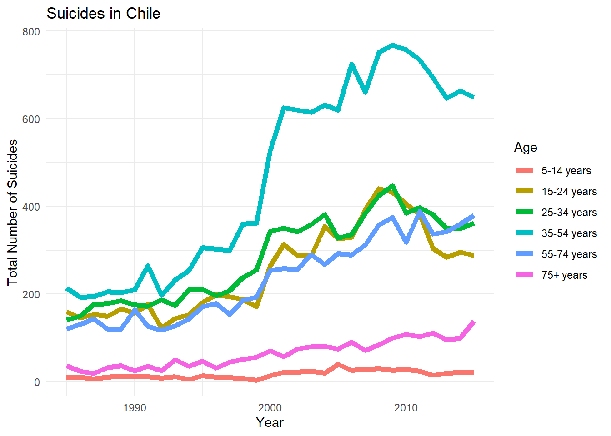

library(tidyverse)
library(here)
library(janitor)Hola!!
Hoy toca ver código. Yeahhh!!! 😁
En mi experiencia, uno de los aspectos más relvantes a la hora de trabajar con datos, es saber manejar los datos categóricos o factores.
En la vida nos topamos a cada instante con este tipo de datos. Cuando vamos al supermercado, compramos frutas, lácteos, verduras y carnes. O cuando revisamos planillas de personas, vemos distintos tipos de profesiones. Si revisamos datos por países, finalmente éstos son categorías. Las categorías están por todos lados.
Por otro lado, el conocimiento de factores es un plus muy potente para analizar datos y realizar la exploración de los mismos. También, para inteligencia artificial, el manejo de datos categóricos es muy relevante. Muchas veces el transformar datos contínuos en factores ayuda a mejorar el desempeño de los modelos predictivos y es parte del feature engineering, uno de los pasos básicos previos antes del desarrollo de cualquier modelo de inteligencia artificial.
Carga de datos
Ok. Ya tenemos claro que, al analizar datos, debemos conocer métodos para trabajar con categorías o factores.
Para ello, R y su framework tidyverse nos ofrece forcats. Una librería especializada en el manejo de factores. Te recomiendo que revises la documentación oficial del la librería.
Ahora revisaremos muchas de sus funciones y que te serán de gran utilidad en el día a día.
Para los ejemplos usaré estos datos disponibles en Kaggle.
Primero cargamos las librerías que usaremos:
Veamos un poco los datos…
here::i_am("index.qmd")
suicides <- read_csv2("master.csv") |>
clean_names()glimpse(suicides)Rows: 27,820
Columns: 12
$ country <chr> "Albania", "Albania", "Albania", "Albania", "Albania…
$ year <dbl> 1987, 1987, 1987, 1987, 1987, 1987, 1987, 1987, 1987…
$ sex <chr> "male", "male", "female", "male", "male", "female", …
$ age <chr> "15-24 years", "35-54 years", "15-24 years", "75+ ye…
$ suicides_no <dbl> 21, 16, 14, 1, 9, 1, 6, 4, 1, 0, 0, 0, 2, 17, 1, 14,…
$ population <dbl> 312900, 308000, 289700, 21800, 274300, 35600, 278800…
$ suicides_100k_pop <chr> "6.71", "5.19", "4.83", "4.59", "3.28", "2.81", "2.1…
$ country_year <chr> "Albania1987", "Albania1987", "Albania1987", "Albani…
$ hdi_for_year <chr> NA, NA, NA, NA, NA, NA, NA, NA, NA, NA, NA, NA, NA, …
$ gdp_for_year <chr> "2,156,624,900", "2,156,624,900", "2,156,624,900", "…
$ gdp_per_capita <dbl> 796, 796, 796, 796, 796, 796, 796, 796, 796, 796, 79…
$ generation <chr> "Generation X", "Silent", "Generation X", "G.I. Gene…head(suicides)# A tibble: 6 × 12
country year sex age suici…¹ popul…² suici…³ count…⁴ hdi_f…⁵ gdp_f…⁶
<chr> <dbl> <chr> <chr> <dbl> <dbl> <chr> <chr> <chr> <chr>
1 Albania 1987 male 15-24 ye… 21 312900 6.71 Albani… <NA> 2,156,…
2 Albania 1987 male 35-54 ye… 16 308000 5.19 Albani… <NA> 2,156,…
3 Albania 1987 female 15-24 ye… 14 289700 4.83 Albani… <NA> 2,156,…
4 Albania 1987 male 75+ years 1 21800 4.59 Albani… <NA> 2,156,…
5 Albania 1987 male 25-34 ye… 9 274300 3.28 Albani… <NA> 2,156,…
6 Albania 1987 female 75+ years 1 35600 2.81 Albani… <NA> 2,156,…
# … with 2 more variables: gdp_per_capita <dbl>, generation <chr>, and
# abbreviated variable names ¹suicides_no, ²population, ³suicides_100k_pop,
# ⁴country_year, ⁵hdi_for_year, ⁶gdp_for_yearas_factor
En este artículo no realizaremos análisis estadísticos pensando en modelos de inteligencia artificial, que es lo clásico que se realiza en Kaggle. Sino que veremos el uso de la librería forcats.
Revisemos la variable age del dataset.
Esta variable está definida como string. Es decir, como una cadena de caracteres.
str(suicides$age) chr [1:27820] "15-24 years" "35-54 years" "15-24 years" "75+ years" ...Si queremos realizar análisis de este dataset, el tener esta variable como string no es buena idea. Parece más razonable transformarlo a un factor. La librería forcats contiene la función as_factor() que nos permite hacer eso.
suicides <- suicides |>
mutate(age = as_factor(age))Veamos nuevamente la estructura de la variable.
str(suicides$age) Factor w/ 6 levels "15-24 years",..: 1 2 1 3 4 3 2 4 5 6 ...Ok. Ahora la variable ya no es de tipo string, sino que la hemos cambiado a tipo factor con 6 niveles. Es decir, tiene 6 categorías. Veámoslas…
levels(suicides$age)[1] "15-24 years" "35-54 years" "75+ years" "25-34 years" "55-74 years"
[6] "5-14 years" fct_relevel
Si te fijas bien, el orden de las categorías no está bien. Me refiero a que no sigue un orden ascendente o descendente, sino que está desordenado. Pues bien, podemos reordenarlos usando la función fct_relevel().
suicides <- suicides |>
mutate(age = fct_relevel(age,
"5-14 years",
"15-24 years",
"25-34 years",
"35-54 years",
"55-74 years",
"75+ years"
))
levels(suicides$age)[1] "5-14 years" "15-24 years" "25-34 years" "35-54 years" "55-74 years"
[6] "75+ years" Para efectos demostrativos, usaré el argumento after de fct_relevel() para reordenar una categoría.
Acá haré que “5-14 years” quede después del índice 1 (recuerda que en R, el índice parte en 1).
suicides <- suicides |>
mutate(age = fct_relevel(age, "5-14 years", after = 1))
levels(suicides$age)[1] "15-24 years" "5-14 years" "25-34 years" "35-54 years" "55-74 years"
[6] "75+ years" Volveré a ordenarlo de forma correcta…
suicides <- suicides |>
mutate(age = fct_relevel(age, "5-14 years", after = 0))
levels(suicides$age)[1] "5-14 years" "15-24 years" "25-34 years" "35-54 years" "55-74 years"
[6] "75+ years" fct_reorder
Esta función es muy útil para los gráficos, ya que permite reordenar los factores de modo de ajustarlos a nuestros requerimientos y necesidades de la visualización.
Realicemos un gráfico para Chile:
suicides |>
filter(
year == 2015,
country == "Chile"
) |>
group_by(age) |>
summarise(suicides_total = sum(suicides_no)) |>
mutate(prop = suicides_total / sum(suicides_total)) |>
ggplot(aes(age, suicides_total,
fill = suicides_total
)) +
geom_col(show.legend = FALSE) +
labs(
title = "Suicides in Chile", subtitle = "Year 2015", y = "Total Number of Suicides",
x = "Age", fill = "Number of Suicides"
) +
coord_flip() +
theme_minimal()
Este gráfico está adecuado. Es informativo para saber cuál es el grupo etario que presenta más suicidios. Fíjate que el eje y está ordenado por las categorías de age. Pero quizás sea más interesante ordenar los datos por el total de suicidios por grupo.
Veamos cómo hacerlo usando fct_reorder.
suicides |>
filter(
year == 2015,
country == "Chile"
) |>
group_by(age) |>
summarise(suicides_total = sum(suicides_no)) |>
mutate(prop = suicides_total / sum(suicides_total)) |>
ggplot(aes(fct_reorder(age, suicides_total), suicides_total,
fill = suicides_total
)) +
geom_col(show.legend = FALSE) +
labs(title = "Suicides in Chile", subtitle = "Year 2015", y = "Total Number of Suicides", x = "Age", fill = "Number of Suicides") +
coord_flip() +
theme_minimal()
Este orden deja más claro la cantidad de suicidios por grupo etario y la proporción entre cada uno, a diferencia del gráfico anterior. Fíjate en dónde usé fct_reorder. Podemos leerlo que deseamos que el eje x (primer parámetro de aes) que corresponde a age, sea ordenado por suicides_total. Esto por defecto se ordena de mayor a menor (orden ascendente). Si deseamos hacerlo en orden descendente, debemos agregar el argumento .desc = TRUE al interior de fct_reoder.
suicides |>
filter(
year == 2015,
country == "Chile"
) |>
group_by(age) |>
summarise(suicides_total = sum(suicides_no)) |>
mutate(prop = suicides_total / sum(suicides_total)) |>
ggplot(aes(fct_reorder(age, suicides_total, .desc = TRUE), suicides_total,
fill = suicides_total
)) +
geom_col(show.legend = FALSE) +
labs(title = "Suicides in Chile", subtitle = "Year 2015", y = "Total Number of Suicides", x = "Age", fill = "Number of Suicides") +
coord_flip() +
theme_minimal()
fct_explicit_na
Para explicar esta funcion, vamos a usar la variable hdi_for_year (Human Development Index) que contiene datos NA.
Creamos algunas categorías:
suicides <- suicides |>
mutate(
hdi_cat = case_when(
hdi_for_year >= 0.80 ~ "Very High Development",
hdi_for_year >= 0.70 ~ "High Development",
hdi_for_year >= 0.55 ~ "Medium Development",
hdi_for_year >= 0.35 ~ "Low Development",
hdi_for_year < 0.35 ~ "Very Low Development"
),
hdi_cat = as_factor(hdi_cat)
)Ya sabemos que la variable hdi_for_year tiene datos NA, por lo que la nueva variable que acabamos de crear también debería tener datos NA´s.
sum(is.na(suicides$hdi_cat))[1] 19456Para trabajar con los datos, tenerlos como NA podría complicar los análisis y algunas funciones aritméticas no funcionarían o sería más dificil de interpretar.
suicides |>
filter(country == "Chile") |>
group_by(country, hdi_cat) |>
summarise(n = n())# A tibble: 4 × 3
# Groups: country [1]
country hdi_cat n
<chr> <fct> <int>
1 Chile Medium Development 24
2 Chile High Development 36
3 Chile Very High Development 60
4 Chile <NA> 252Una opción es usar fct_explicit_na para identificar los NA´s y asignarle un valor a esa categoría. Esto hace más legible las tablas y los análisis.
suicides <- suicides |>
mutate(hdi_cat = fct_explicit_na(hdi_cat, na_level = "Missing"))
suicides |>
filter(country == "Chile") |>
group_by(country, hdi_cat) |>
summarise(n = n())# A tibble: 4 × 3
# Groups: country [1]
country hdi_cat n
<chr> <fct> <int>
1 Chile Medium Development 24
2 Chile High Development 36
3 Chile Very High Development 60
4 Chile Missing 252fct_lump
Podemos agrupar categorías, según necesidad. Retomemos la variable que creamos hdi_cat.
Omitimos los datos NA´s, mantenemos las 2 categorías con mayor cantidad de datos y el resto las agrupamos en una nueva categoría “Average/Low Development” usando el argumento other_level.
suicides |>
na.omit() |>
mutate(hdi_lumped = fct_lump(hdi_cat, n = 2, other_level = "Average/Low Development")) |>
count(hdi_lumped) |>
mutate(prop = n / sum(n)) |>
arrange(desc(n))# A tibble: 3 × 3
hdi_lumped n prop
<fct> <int> <dbl>
1 Very High Development 3600 0.430
2 High Development 2952 0.353
3 Average/Low Development 1812 0.217Acabamos de mantener las 2 categorías con más datos ( n = 2), pero tambén podemos usar una proporción para hacer esa segmentación. Para ello, usamos el argumento prop.
Veamos un ejemplo…
suicides |>
na.omit() |>
mutate(hdi_relevel = fct_lump(hdi_cat, prop = 0.2, other_level = "Below Average")) |>
count(hdi_relevel) |>
mutate(prop = round(n / sum(n), 3))# A tibble: 4 × 3
hdi_relevel n prop
<fct> <int> <dbl>
1 Medium Development 1752 0.209
2 High Development 2952 0.353
3 Very High Development 3600 0.43
4 Below Average 60 0.007Usamos prop = 0.20 para indicar que cualquier categoría con 20% o menos se indica como “Below Average”.
fct_infreq
Esta función se usa junto a la librería ggplot2. Por ejemplo, para una gráfica de conteo de datos, esta función permite ordenar por frecuencia.
Primero veamos sin usarla y luego usándola.
suicides |>
na.omit() |>
add_count(hdi_cat) |>
ggplot(aes(hdi_cat)) +
geom_bar(stat = "count") +
labs(x = "HDI Level", y = "Count") +
theme_minimal() 
levels(suicides$hdi_cat)[1] "Medium Development" "High Development" "Very High Development"
[4] "Low Development" "Missing" Como te darás cuenta, el gráfico anterior está ordenado por los niveles de las categorías de hdi_cat ( y que no está ordenado además). Podemos usar fct_infreq para order las categorías por frecuencia (por defecto, lo hace en orden descendente).
suicides |>
na.omit() |>
add_count(hdi_cat) |>
ggplot(aes(fct_infreq(hdi_cat))) +
geom_bar(stat = "count") +
labs(x = "HDI Level", y = "Count") +
theme_minimal() 
fct_rev
Podemos hacer lo mismo anterior, pero ordenarlos en forma ascendente. Para ellos usamos fct_rev.
suicides |>
na.omit() |>
add_count(hdi_cat) |>
ggplot(aes(fct_rev(fct_infreq(hdi_cat)))) +
geom_bar(stat = "count") +
labs(x = "HDI Level", y = "Count") +
theme_minimal() 
fct_count
Esta función nos permite contar los datos por cada nivel de las categorías.
fct_count(suicides$hdi_cat)# A tibble: 5 × 2
f n
<fct> <int>
1 Medium Development 1752
2 High Development 2952
3 Very High Development 3600
4 Low Development 60
5 Missing 19456Esta función reemplaza lo que podemos hacer con la combinación de group_by y summarise. Es lo mismo, pero con menos líneas de código. Esto podría ser útil en algunos casos para ser más productivo, pero se pierde legibildad, pues hay que saber qué hace exactamente fct_count. En cambio, la combinación de funciones es más explícita. Queda a tu criterio de programador cual usar.
suicides |>
group_by(hdi_cat) |>
summarise(n = n())# A tibble: 5 × 2
hdi_cat n
<fct> <int>
1 Medium Development 1752
2 High Development 2952
3 Very High Development 3600
4 Low Development 60
5 Missing 19456fct_unique
Esta función es similar a unique de la base de R. O sea, muestra los valores únicos de una variable.
fct_unique(suicides$hdi_cat) [1] Medium Development High Development Very High Development
[4] Low Development Missing
5 Levels: Medium Development High Development ... Missingunique(suicides$hdi_cat)[1] Missing Medium Development High Development
[4] Very High Development Low Development
5 Levels: Medium Development High Development ... Missingfct_collapse
Esta función nos permite crear un factor a partir de otros. Es decir, colapsarlos en otro (o agruparlos).
Para revisar esta función, ahora usaremos la variable generation. Crearemos 2 nuevas variables que contienen distintas categorías.
suicides |>
mutate(generation = as_factor(generation)) |>
mutate(generations = fct_collapse(generation,
"Older Generations" = c("Silent", "G.I. Generation", "Boomers"),
"Younger Generations" = c("Generation X", "Generation Z", "Millenials")
)) |>
pull(generations) |>
levels()[1] "Younger Generations" "Older Generations" fct_other
Esta función permite agrupar niveles, para compararlo con uno en especial. Para definir la categoría que queremos mentener usamos el argumento keep y el resto se agrupa en other.
suicides |>
mutate(silent_against_other = fct_other(generation, keep = "Silent")) |>
pull(silent_against_other) |>
levels()[1] "Silent" "Other" fct_recode
Esta función permite recodificar un nivel. Es decir, asignarle un nuevo nombre a una categoría. Esto tiene varias posibilidades, como hacer más entendible una variable.
suicides |>
mutate(age_levels = fct_recode(age,
"Child" = "5-14 years",
"Adolescent/Young Adult"= "15-24 years",
"Adult" = "25-34 years",
"Middle-Aged Adult"= "35-54 years",
"Older Adult" = "55-74 years",
"Senior" = "75+ years")) |>
pull(age_levels) |>
levels()[1] "Child" "Adolescent/Young Adult" "Adult"
[4] "Middle-Aged Adult" "Older Adult" "Senior" fct_reorder2
Esta función se aplica para los gráficos, junto a ggplot2. Lo que hace es reordenar los valores en base a un atributo.
suicides |>
filter(country == "Chile") |>
group_by(year, age) |>
summarise(suicides_total = sum(suicides_no)) |>
ggplot(aes(year, suicides_total, colour = fct_reorder2(age, year, suicides_total))) +
geom_line(size = 2) +
labs(title = "Suicides in Chile",
y = "Total Number of Suicides",
x = "Year", colour = "Age") +
theme_minimal()
Mira lo que pasa si no usamos fct_reorder2. Las líneas de la gráfica son las mismas obviamente, pero la leyenda cambia y los colores de éstas también. La leyenda aparece en el orden de las categorías que ordenamos antes, pero en el gráfco anterior, se ordenan en base al último valor y por tanto, la leyenda coincide con el orden de las lineas. Eso hace que sea más legible y fácil de interpretar.
suicides |>
filter(country == "Chile") |>
group_by(year, age) |>
summarise(suicides_total = sum(suicides_no)) |>
ggplot(aes(year, suicides_total, colour = age)) +
geom_line(size = 2) +
labs(title = "Suicides in Chile",
y = "Total Number of Suicides",
x = "Year", colour = "Age") +
theme_minimal()
fct_relabel
Esta función permite modificar el nombre de los niveles.
suicides$age |>
fct_relabel(~ str_replace_all(.x, "years", " ")) |>
head()[1] 15-24 35-54 15-24 75+ 25-34 75+
Levels: 5-14 15-24 25-34 35-54 55-74 75+ fct_anon
Esta función permite anonimizar una variable categórica.
suicides |>
mutate(generation = as_factor(generation) |>
fct_anon()) |>
group_by(generation) |>
count()# A tibble: 6 × 2
# Groups: generation [6]
generation n
<fct> <int>
1 1 5844
2 2 4990
3 3 6408
4 4 2744
5 5 6364
6 6 1470Se puede agregar un prefijo a cada categoría anonimizada:
suicides |>
mutate(generation = as_factor(generation) |>
fct_anon("x-")) |>
group_by(generation) |>
count()# A tibble: 6 × 2
# Groups: generation [6]
generation n
<fct> <int>
1 x-1 2744
2 x-2 5844
3 x-3 4990
4 x-4 1470
5 x-5 6364
6 x-6 6408Finalmente…
Hemos revisado muchas de las funciones de la librería forcats, que como ves es bastante extensa. De hecho, no revisamos todas, hay varias más, pero me parece que son muy específicas y para casos muy puntuales. De todas formas, recuerda visitar la documentación oficial para revisar más detalles.
Como puedes ver, el conocer alguna de estas funciones es de mucha utilidad para trabajar con datos categóricos. Y como siempre, recuerda practicar y practicar. No hay otra forma de que las cosas se te queden en la cabeza.
Nos vemos!!! 😃